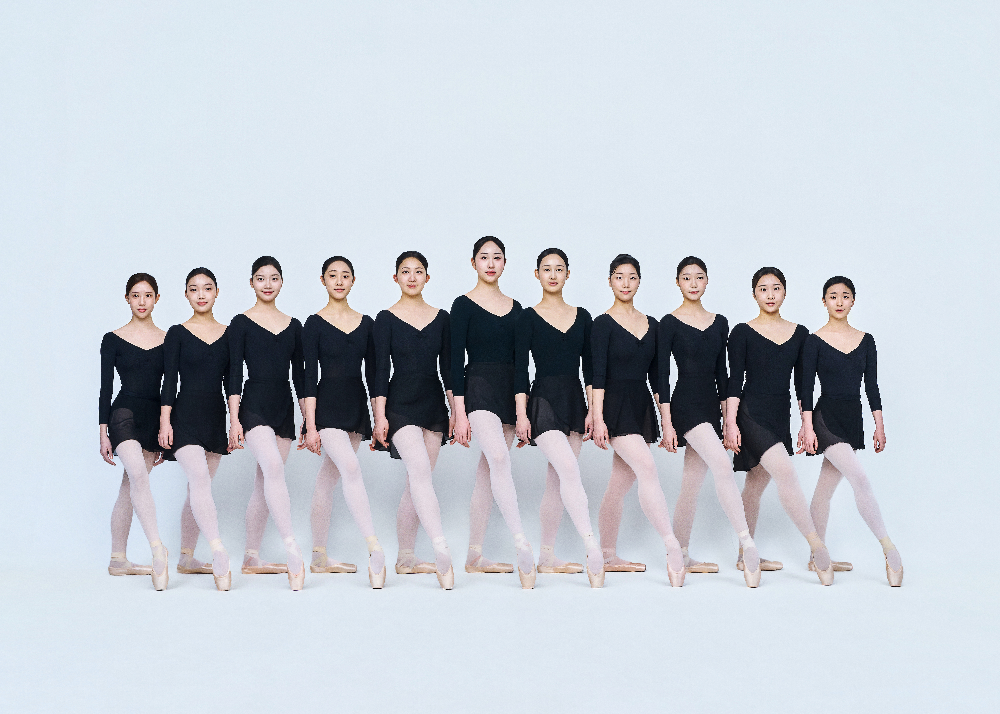

PERFORMANCE
발레Ballet
발푸르기스의 밤 (Walpurgis Nacht)
서주(Introduction), 누비아 여인들의 춤(Danse des Nubiennes), 바쿠스 여신도들의 춤(Danse des Bacchantes), 요정들의 춤(Danse des Sylphes), 여왕의 춤(Danse de la Reine), 도깨비의 춤(Danse de Pan), 파드되(Pas de Deux), 피날레(Finale)
작품내용
「발푸르기스의 밤(Walpurgis Nacht)」은 샤를 구노(C. Gounod)의 오페라 「파우스트(Faust)」 제 5막에 삽입된 발레 장면인 발푸르기스의 밤(Ballet de la Nuit de Walpurgis)의 음악으로 조지 발란신(G. Balanchine)이 안무하여 1975년에 초연된 작품이다. 이 작품은 발푸르기스의 밤을 배경으로 요정 등의 신화적 존재들이 등장해 매우 화려하며 역동적인 움직임을 보여준다. 본 공연에서는 2017년에 공연된 작품을 재구성하였다.
- 재구성 / 안무 |
- G. Balanchine
- 음악 |
- C. Gounod
- 출연 (2학년) |
- 김주연, 김지영, 나윤서, 도재은, 박서연, 박주윤, 박하람, 서연우, 윤신영, 이도여, 전혜진
- 출연 (3학년) |
- 고지우, 김규림, 김민서, 김은서, 김채민, 김태리, 안솔비, 이수아, 조은아, 황현서, 권대우
